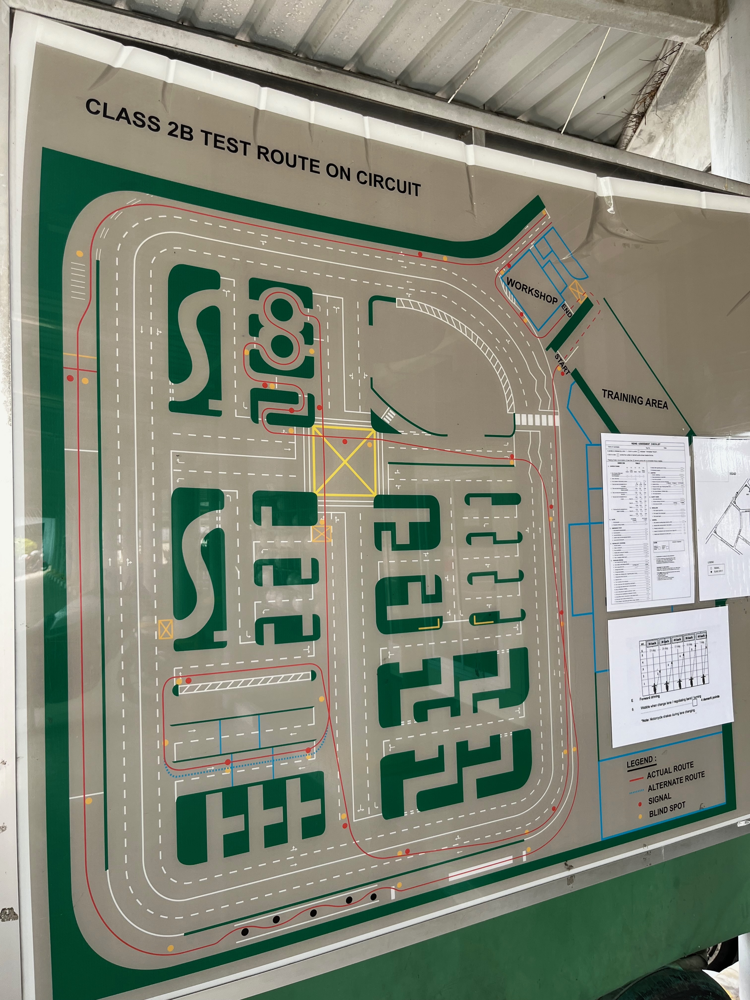

1-02 Changing Gear
Gear 1 to 2
- throttle off and clutch in
- Shift to gear 2
- Clutch off (not too fast nor slow)
Gear 2 to 1
- Accelerator off
- Brake - Right hand on right brake (Don’t need to press, just touch)
- Clutch in
- Down gear to 1
- If breaking, just footbrake. If continue moving, just slowly half clutch and throttle more
1-03 High Speed Low Speed
Gear 1 Queuing
- Clutch and Throttle off
- Brake - Right hand on right brake (Don’t need to press, just touch), use footbrake more
- D ???
2-01 Left Turn & Slope
Left Turn (from stop line)
- Gear 1 & already signal left
- Check left right left
- Clutch in & Throttle
- Check left blind spot
- Move off
Slope
- Upslope - If stop at gear 1, step and hold onto footbrake - Signal right - Check right blind spot - Clutch in & Throttle. Release footbrake when you sense the biting point - Check right blind spot before move off - Move off - Downslope - Release clutch - Signal left (if going left) - Brake when needed - Check for turning direction - Turn2-02 Right Turn & Changing Lane
Right Turn (from stop line)
- Gear 1 & already signal right
- Check right, left (maybe a few times)
- Charm: right eye on which vehicle, check left, clear already then check right to confirm, check left to confirm
- Clutch in & Throttle
- Check right mirror and blind spot
- Move off
Change Lane
- Signal the direction
- Check mirror & blind spot
- Throttle (accelerate) in that direction instead of bending too much
3-01 Plank & Pylon Slalom
Plank (Gear 1) & Need to finish longer than 6 Seconds
- Clutch in & Throttle to 300 to 400 RPM
- Move off (half clutch)
- Knee hug the bike tightly
- Vary the speed with clutch or foot brake
- Balance with minor movement most using elbow
Pylon slalom (start from gear 1) & Need to finish under 6 seconds
- move off change to gear 2
- when turning, either throttle off or footbrake slightly to slow down
3-02 Emergency Break
Emergency Break (runway for break is 70m)
- Get to gear 3 and speed of 30-35km/h before 35m - Break with front brake more (60% front brake 40% foot brake) - Clutch in when almost stationary - Check right blind spot before putting right foot - Change to gear 1 - Check left blind spot before putting left foot - Check right blind before moving off4-01 S & Crank Course
S Course (Finish within 11 Seconds)
- Check left blind spot and enter with 2nd gear - Regulate speed with footbrake - Look far and not down - First middle - 2nd middle - Right of the road - [!] Check for approaching vehicles around exit before reaching it - If there is approaching vehicle, change to 1st gear and stop outside course - if not, exit without stopping - Check left blind spot before turning into Crank Course’s waiting areaCrank Course
5-01 Pillion and Circuit Test Riding Route
Pillion
- Keep the engine off when pillion get up or down
- Both legs on the floor when pillion get up or down. Rider to brace the load when pillion get up or down
Test Route

- 6 Courses
- Slope
- S
- Crank
- Prank
- Pylon
- E Brake
Video below mainly serve the purpose of additional tips:
- At junction - Check right, left then back - Look ahead on the land filtering from the left7 Road Test Riding Route
Either refer to google map or below.